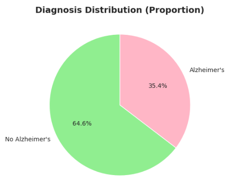
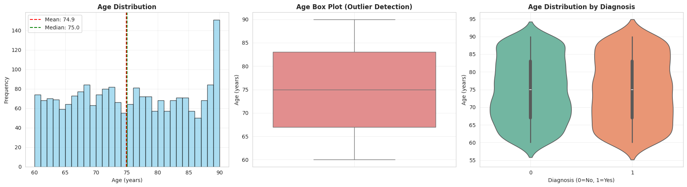
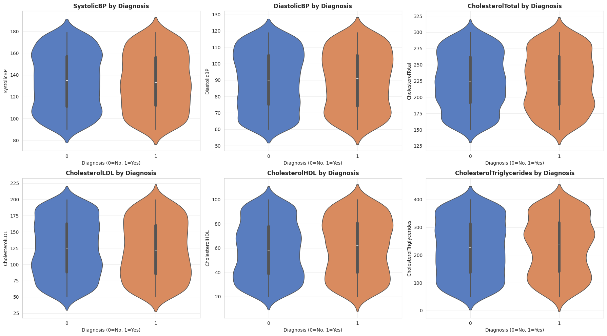
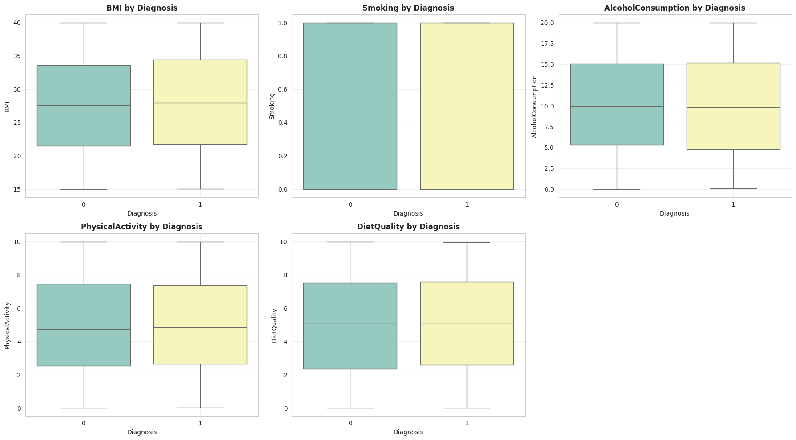
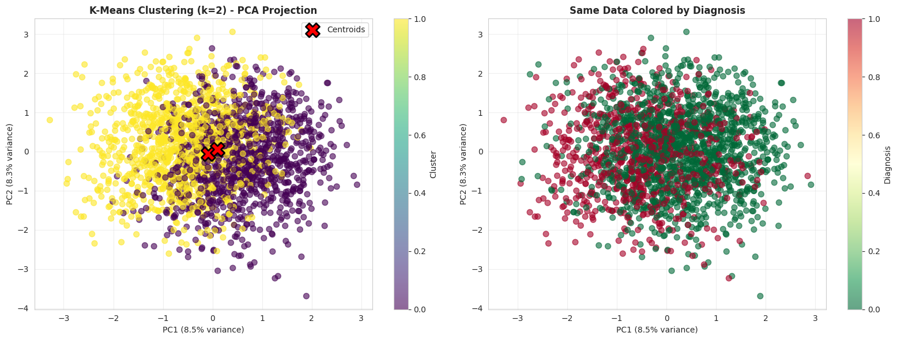
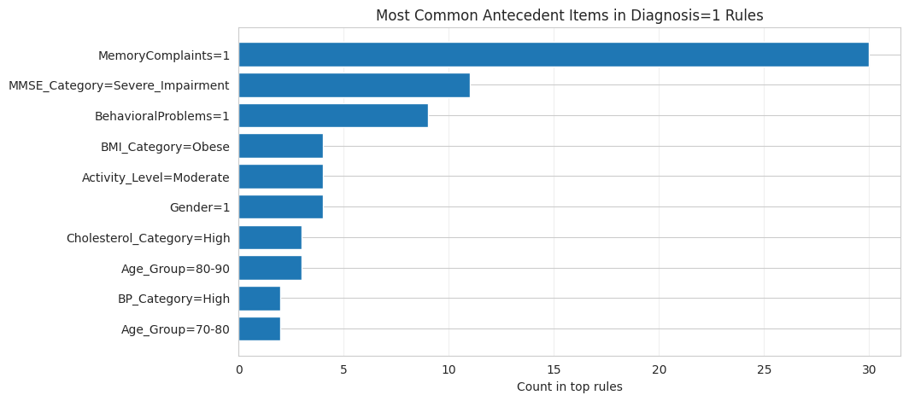
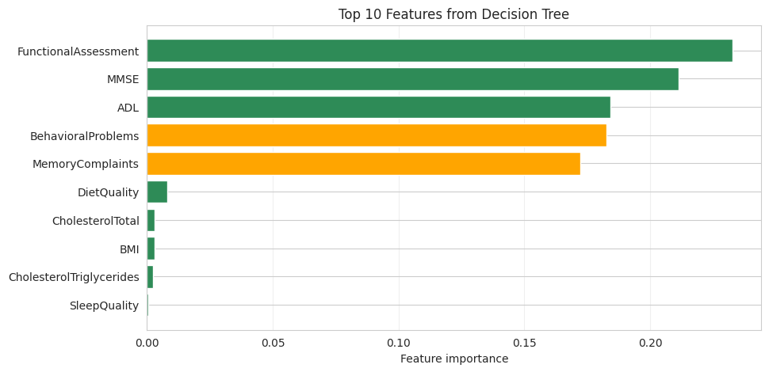

Why this matters — and who it affects
Alzheimer's Disease affects over 50 million people worldwide. It is the most common cause of dementia — and one of medicine's most heartbreaking challenges. By the time most patients are diagnosed, the disease has already progressed significantly. Families have noticed the memory slips. The forgotten appointments. The personality changes. But the clinical diagnosis comes late, and the window for early intervention narrows.
The question this study asked is deceptively simple: can routine clinical data — the kind collected at any standard doctor's visit — reveal patterns that help us detect Alzheimer's earlier?
We applied a full knowledge discovery pipeline to a dataset of 2,149 patients spanning demographics, lifestyle, cardiovascular health, cognitive tests, and behavioral assessments. Our approach was systematic: explore, cluster, mine for rules, classify, and — critically — check whether the same features emerge as important across multiple independent methods.
The goal was not just prediction accuracy. It was interpretability — building models that a clinician can understand, audit, and trust in practice.
Who is in this dataset?
Before any modeling, we needed to understand the data: who these patients are, how diagnoses are distributed, and which features show the strongest relationships with Alzheimer's.

The dataset has a 1.83:1 class imbalance — more patients without AD than with. This reflects clinical reality and motivated stratified sampling and class-weighted models throughout the analysis.

Both diagnosed and non-diagnosed patients span the full 60–90 age range with similar distributions. This tells us that age alone cannot diagnose Alzheimer's — and motivates the multivariate approach that follows.

The top predictors are FunctionalAssessment (r=−0.36) and ADL (r=−0.33) — measures of daily living ability — which outrank even MMSE (r=−0.24). Perhaps most importantly, subjective MemoryComplaints (r=+0.31) ranks third, validating the clinical wisdom of listening to patients and caregivers. No single feature achieves r>0.36 — no single test is enough.

Cardiovascular markers show near-identical distributions between diagnosed and non-diagnosed patients. This is a meaningful finding: for Alzheimer's specifically (vs vascular dementia), functional and behavioral measures are far more discriminative than cardiovascular risk factors.

Smoking, alcohol, diet, and physical activity show minimal differences between groups in this cross-sectional data. Lifestyle factors likely act over decades rather than showing strong single-point effects — but this doesn't diminish their preventive importance.
Do discrete patient subtypes exist?
Medical literature suggests Alzheimer's may present differently across patients — memory-predominant, executive function-predominant, language-predominant forms. If distinct patient subtypes exist in this data, unsupervised clustering should reveal them.
We tested k-means clustering for k=2 through 7, validating each solution with four independent metrics: silhouette score, Davies-Bouldin index, Calinski-Harabasz score, and inertia. We then validated with hierarchical clustering using Ward linkage.

Silhouette scores of 0.051–0.059 across all k values — far below the 0.3 threshold for meaningful separation. No "elbow" appears in the inertia curve. The Davies-Bouldin index remains high. All metrics converge on the same conclusion: discrete patient subtypes do not exist in this data.

In 2D PCA projection, even true diagnosis labels (right panel) show complete mixing. There is no region of space that "belongs" to Alzheimer's patients — the disease varies continuously across multiple dimensions simultaneously.

If real clusters existed, both algorithms would find similar groupings. An Adjusted Rand Index of 0.025 — near zero — means k-means and hierarchical clustering assign patients almost randomly differently. The clusters are algorithmic artifacts, not real structure.
We reframe this as a meaningful scientific finding, not a failure: Alzheimer's severity in this population lies on a continuum rather than forming discrete patient subtypes. This aligns with the NIA-AA Research Framework and current biological understanding of dementia progression. No clustering method will find what doesn't exist — and recognizing that takes rigour.
Which combinations of symptoms predict a diagnosis?
Since clustering revealed no discrete groups, we pivoted to a different question: not "what type of patient is this?" but "when these specific symptoms co-occur, how predictive is that combination?" Association rule mining answers exactly this.
Using the Apriori algorithm on discretized clinical features, we discovered 39 interpretable IF-THEN rules predicting Alzheimer's diagnosis, each with at least 60% confidence and lift ≥ 1.5.
The strongest rule: IF MemoryComplaints = 1 AND MMSE_Category = Severe Impairment → AD diagnosis with 84% confidence and 2.36× lift. Patients with this combination are 2.36 times more likely to have Alzheimer's than the average patient in the dataset.

This chart shows how often each feature appears in the 39 high-confidence rules. MemoryComplaints is overwhelmingly the most common antecedent — validating that patient and caregiver-reported memory concerns are not "soft" data but among the strongest clinical signals available. MMSE impairment and BehavioralProblems follow. Notably, the top 3 features are all behavioral or subjective — not blood tests, not imaging.
Can a machine learning model match clinical judgment?
Association rules provide local, specific patterns. But for a complete diagnostic tool, we need a model that covers every patient — not just those matching a specific symptom combination. Decision trees offer exactly this: a single, unified model that is also fully transparent.
We ran a grid search across 12 hyperparameter configurations. The best model — maximum depth of 5, minimum 10 samples per leaf — achieved 93.8% accuracy, 0.912 F1-score, 91% sensitivity, and 95% specificity. It correctly identified 91% of all Alzheimer's cases in the test set.
For comparison: always predicting "no Alzheimer's" achieves 64.7% accuracy. Logistic regression achieves 81.6%. Our decision tree at 93.8% does this while remaining fully interpretable — clinicians can follow the exact reasoning path for any patient.

FunctionalAssessment (23.3%) is the single most important feature — more than MMSE. Together with ADL (18.4%) and MMSE (21.2%), these three functional and cognitive measures account for 62.9% of all predictive information. Orange bars show features that also appear prominently in association rules — providing convergent evidence from two completely independent methods that MemoryComplaints and BehavioralProblems are clinically central.